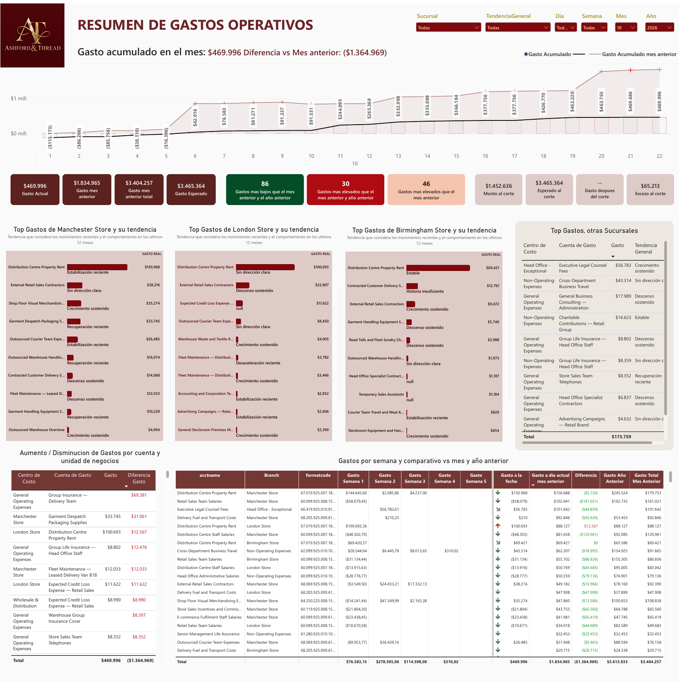
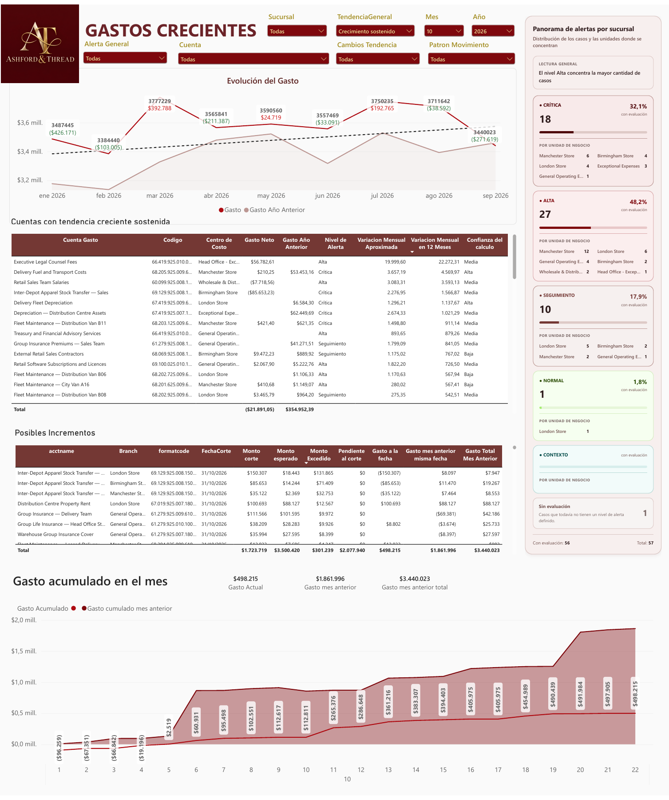
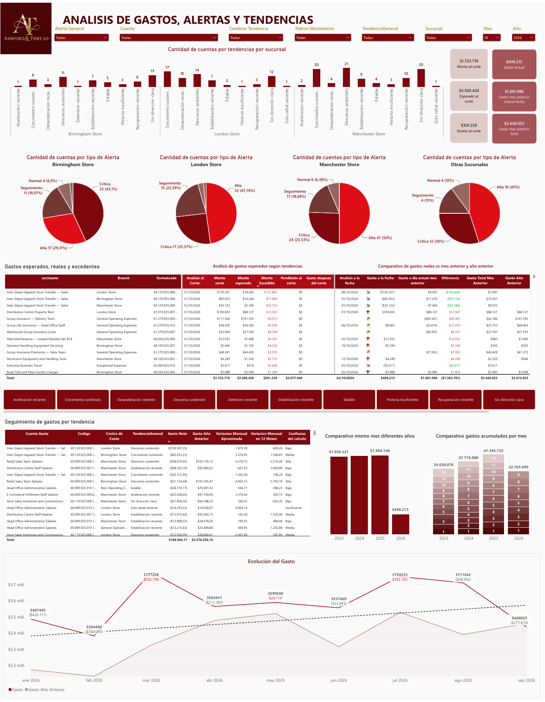

Tendencias multiventana
Comparación de horizontes de 3, 6, 9 y 12 meses para distinguir la dirección histórica de los cambios recientes.
V1 · MOTOR DE CONTROL Y ANÁLISIS DE GASTOS
Más allá del gasto registrado: un motor analítico para comprender tendencias, identificar patrones de recurrencia, estimar el comportamiento esperado y priorizar desviaciones que requieren revisión.

EL RETO
Revisar manualmente numerosas cuentas y centros de responsabilidad dificulta reconocer a tiempo tendencias sostenidas, cambios recientes o registros que aparecen en momentos atípicos del mes.
Este proyecto combina información transaccional, procesamiento automatizado y estadística explicable para responder no solo cuánto se ha gastado, sino también cómo, cuándo y con qué consistencia se producen los movimientos.
El motor permite recorrer los resultados desde un panorama ejecutivo hasta el detalle por cuenta y unidad de negocio, conservando las referencias analíticas que justifican cada clasificación.
CAPACIDADES
Comparación de horizontes de 3, 6, 9 y 12 meses para distinguir la dirección histórica de los cambios recientes.
Identificación de continuidad, frecuencia, magnitud y concentración del gasto por cuenta y unidad de negocio.
Estimación estadística mediante medianas históricas recientes; sirve de comparación, no de presupuesto oficial.
Estudio de semanas habituales de registro y checkpoints completos para detectar adelantos y retrasos.
Señales sobre excesos, aceleración, desviaciones de ritmo y posibles registros pendientes de revisión.
Las conclusiones consideran historial válido, estabilidad, continuidad y calidad del ajuste, incluso evidencia insuficiente.
ANALÍTICA ESTADÍSTICA EXPLICABLE
Regresión lineal, pendientes, variaciones entre ventanas y coeficiente de determinación R² para evaluar el comportamiento de cada cuenta.
Medianas de períodos cerrados de 6 y 12 meses, frecuencia de actividad y dispersión para construir estimaciones menos sensibles a valores extremos.
Concentración temporal, semana principal y puntos de acumulación del 50% y 80%, contrastados con los cortes de los días 7, 14, 21 y 28.
Reglas de negocio y puntuación de severidad que transforman indicadores cuantitativos en señales operativas con dirección e importes.
ARQUITECTURA DEL MOTOR
El mes evaluado no alimenta la referencia histórica contra la cual se compara.
Se separan movimientos técnicos y se evitan comparaciones con semanas incompletas.
Versiones, fechas de corte, identificadores de ejecución y controles sobre cambios retrospectivos.
EXPERIENCIA EN POWER BI
Seguimiento al corte, comparación histórica y cuentas relevantes por sucursal.
Ver imagen ampliada ↗
Tendencias sostenidas, alertas por severidad y casos que requieren atención.
Ver imagen ampliada ↗
Clasificaciones de comportamiento, comparación de gastos esperados y reales, y detalle por cuenta.
Ver imagen ampliada ↗STACK TECNOLÓGICO
Preparación de información, análisis temporal, calibración estadística y evaluaciones automatizables.
Staging transaccional, consultas analíticas, almacenamiento de resultados y auditoría.
Conectividad y persistencia entre el motor Python y la base de datos.
Lectura ejecutiva de resultados, segmentaciones y exploración de alertas hasta el detalle contable.
Origen empresarial de los movimientos contables procesados por la solución.
Revisión retrospectiva de reglas de cadencia, calidad de datos y consistencia entre ejecuciones.
BRYAN MÉNDEZ · DATA & BI PORTFOLIO
Comprender patrones, reconocer tendencias y anticipar desviaciones mediante analítica financiera interpretable y trazable.
Explorar más proyectos →